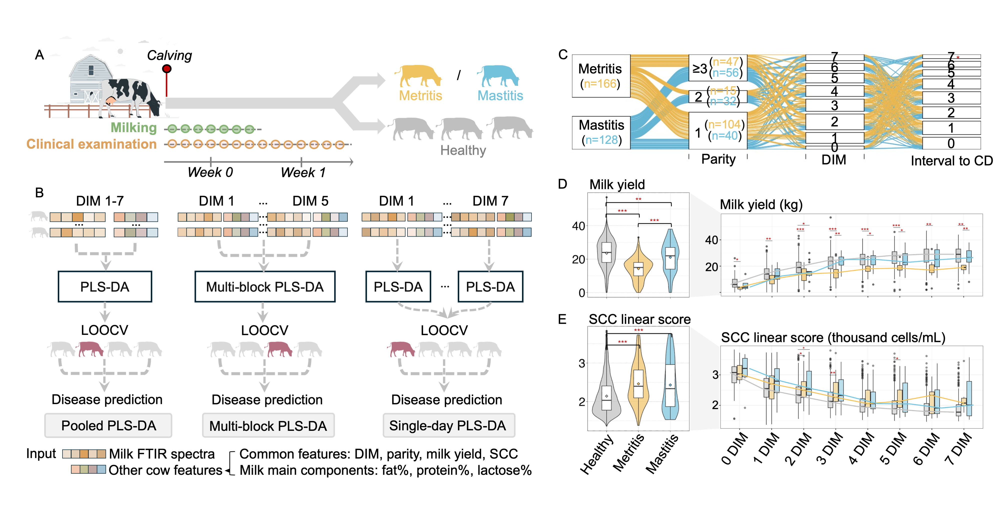
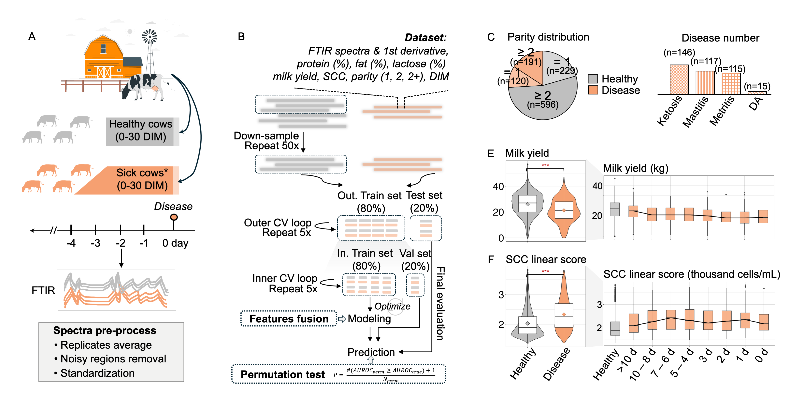

I'm a bioinformatician, working on AI-driven Digital Animal Health and Health Informatics. My work seeks to improve animal's health and well-being through unlocking the potential of ubiquitous data (i.e., macro-level physiological records and wearable time-series, and micro-level genome and metagenome), and cutting-edge AI techniques (i.e., predictive and interpretable machine and deep learning models). My research includes projects on human, mammals, and insects from the Americas and Eurasia.
Growing up in several cross-disciplinary projects spanning life science and engineering, I became fascinated by the idea of translating human-oriented technologies to animals, which uses diverse data streams to understand, monitor and predict animal health. In the meanwhile, the profound impact of COVID-19 further reinforced my awareness of the deep interconnection between human and animal health. It motivated me to embrace the One Health perspective in my work, recognizing that preventing disease in animals is an essential step toward protecting global public health.
Short bio: My current affiliation is a Postdoctoral Scholar in McArt Dairy Cow Lab at Cornell University. I completed my Ph.D. in Bioinformatics at City University of Hong Kong in Spring 2024, under the CityU–Cornell collaborative Interdisciplinary PhD program (advisors: Drs. Jun Li and Jessica McArt). Before that, I received my master's degree in Biomedical Engineering from The Chinese University of Hong Kong in 2019, and my bachelor's degree in Biomedical Engineering from Shenzhen University in 2018.
One of my primary research programs focuses on using AI models (machine and deep learning) to improve health prediction and monitoring in dairy cows. I have developed predictive models that leverage wearable sensor time-series (e.g., activity, rumination) and milk FTIR spectra to detect early signs of key health events and postpartum diseases in Holstein cows, including pregnancy loss, metritis, and mastitis. These efforts aim to support non-invasive, data-driven decision-making in dairy herd management and enhance early intervention strategies. Check our key publications:
|  |
Prediction and classification of metritis and mastitis in Holstein cows using transition milk spectra under different modeling strategies – prospective assessment following parturition Journal of Dairy Science [Accepted] [project website] [code] [shiny app] [poster] |
|  |
Predicting postpartum diseases in Holstein cows using milk spectra and machine learning – retrospective assessment from diagnosis date Journal of Dairy Science [Accepted] [project website] [code] [poster] |
|
Transformer Neural Network to Predict and Interpret Pregnancy Loss from Activity Data in Holstein Dairy Cows Computers and Electronics in Agriculture [paper][code] |
With a background in bioinformatics, I have contributed to several projects that explore the genomic and microbiome underpinnings of host traits and disease susceptibility, including uncovering recent adaptive evolution in the high-altitude Himalayan honeybee (Apis laboriosa) through comparative genomics, as well as characterizing gut microbiome responses in mice to probiotics and dietary compounds in controlled experimental models. Check our key publications:

|
Comparative Genomics Reveals Recent Adaptive Evolution in Himalayan Giant Honeybee Apis laboriosa Genome Biology and Evolution [paper][supplemental files][code] |
|
Treatment with mixed probiotics induced enhanced and diversified modulation of the gut microbiome of healthy rats FEMS Microbiology Ecology [paper] |
|
Theabrownin-induced Bifidobacterium pseudolongum enrichment mitigates experimental colitis in mice npj Science of Food [In revision] |
My recent work focuses on generative AI—especially diffusion and transformer models—for synthesizing biomedical and wearable sensor data. I developed SynLS, a diffusion-transformer framework that generates realistic livestock activity time series to support disease prediction. In parallel, I co-led the development of a generative foundation model for chest radiography, enabling zero-shot clinical tasks from large-scale medical imaging. Together, these projects reflect my broader interest in building cross-domain generative systems for physiological and clinical data. Check our key publications:
(# equal contribution)
|
A Generative Foundation Model for Chest Radiography NEJM AI [Under review] |
|
SynLS: A novel diffusion-transformer framework for generating high-quality wearable sensor time series data to enhance health monitoring biorxiv [In preparation] [preprint][project website] |

|
Keratoconus Diagnosis: Validation of a Novel Parameter Set Derived from IOP-Matched Scenario Journal of Ophthalmology [paper] |

|
PRSNet : Part Relation and Selection Network for Bone Age Assessment MICCAI 2019 [paper] |

|
Pre-impact Alarm System for Fall Detection Using MEMS Sensors and HMM-based SVM Classifier In 2018 40th Annual International Conference of the IEEE EMBC [paper] |
Preventive Veterinary Medicine (1), BMC Bioinformatics (1), Computers and Electronics in Agriculture (1)